Overview
The National Health Insurance (NHI) app is a government-issued public health tool in Taiwan, yet many users, including myself, struggle with its overwhelming interface, unclear navigation and scattered information architecture.
As a frequent user of the app during the pandemic, I found it hard to locate basic functions such as completed COVID vaccination doses, medical reports and insurance billing. That frustration made me curious about the root causes of the poor experience.
Research
User Survey
To validate the issue, I surveyed people who actively use the NHI app. Their pain points were consistent: the login process is complicated, functions are hard to find, the app offers too many unclear options, and function titles are ambiguous. The usability problems are not isolated, they are systemic.
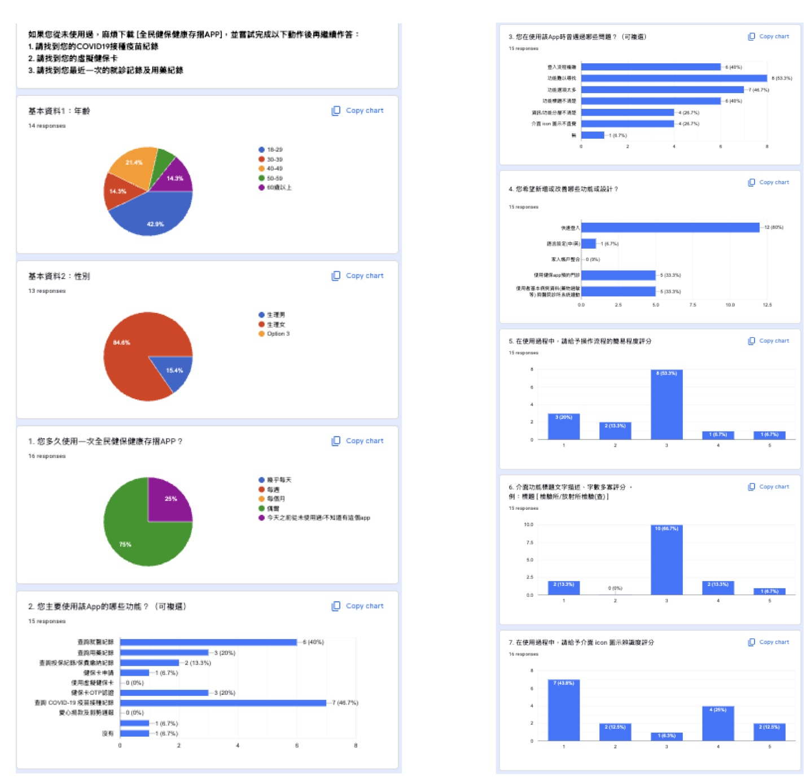
The result is a unified, intuitive and AI-supported NHI app that simplifies navigation, organizes complex health data, makes services easy to search and streamlines insurance billing.
Personas
The survey findings shaped three personas who represent the different needs of people navigating both the app and the wider healthcare system.
Persona 1
Emily Chen
Routine Health Visitor · 29 · Taipei
“I just want a quick and easy way to make an appointment, both online and at the counter.”
Goals
- Easily book and manage clinic appointments
- Get reminders for annual check-ups
- Store medical history and vaccination records
Frustrations
- Booking systems that need phone calls or manual registration
- Filling out the same paperwork at every clinic
Persona 2
Mr. James Wu
Project Manager with Chronic Condition · 61 · Taichung
“Managing my chronic condition while working long hours is already stressful. I want to access my records & lab results efficiently when needed.”
Goals
- Track medical records and lab results in one place
- Set reminders for medication and hospital visits
- Easily communicate with healthcare providers
Frustrations
- Carrying multiple papers and cards to every appointment
- Hard-to-understand medical records
Persona 3
Sofia Li
Newcomer Seeking Primary Care · 35 · Kaohsiung
“I need to feel confident about my healthcare choices in a new environment.”
Goals
- Discover trusted clinics nearby
- Register for national health services quickly
- Manage all health interactions digitally
Frustrations
- No central information for new residents
- Delays in registration and first-time appointments
In-App Problems
Research surfaced two layers of problems: usability issues inside the app, and challenges in the healthcare system around it. These are the first layer.
Problem 1
Complex Log-in Process
The current app has no single sign-in flow. It shows multiple login pop-ups, repeated authentication prompts and login buttons scattered across pages, so people re-enter details whenever they open a different feature. It slows them down and makes the app feel disorganized and hard to trust.
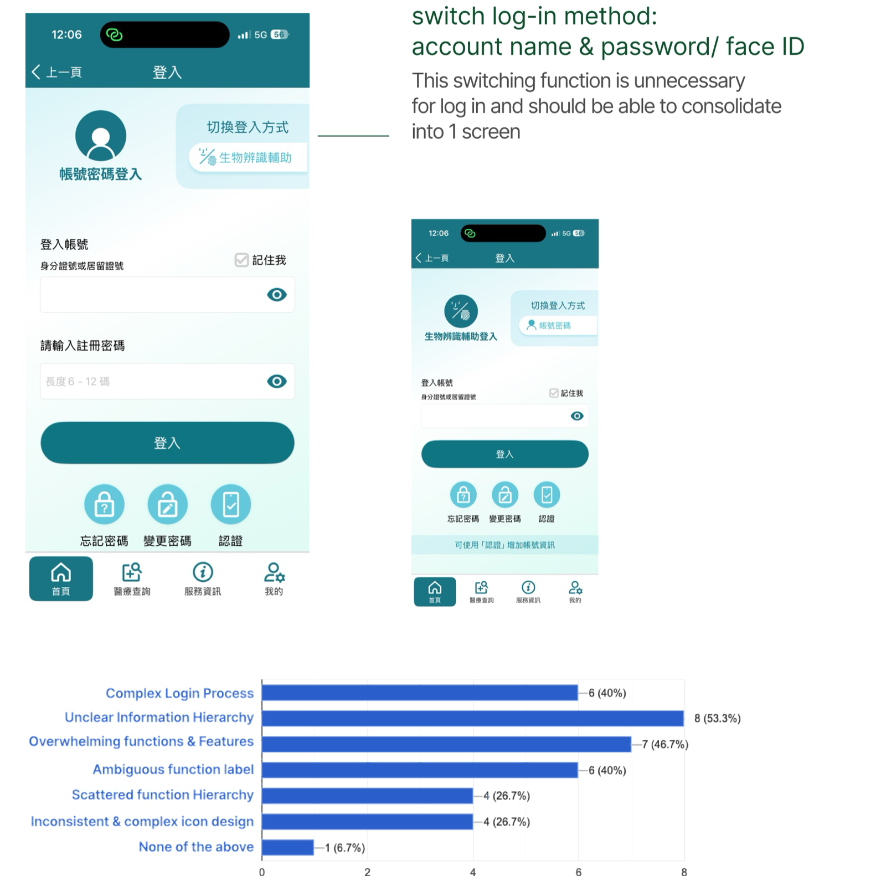
Solution
Friendly Onboarding & Sign-Up
A personalized onboarding sequence collects the user's basic medical information, chronic conditions and most-visited services, so the app can tailor recommendations, prioritize relevant features and surface nearby clinics.
People then sign up and log in once, through one simplified screen with biometric support, with no repeated prompts later in the journey.
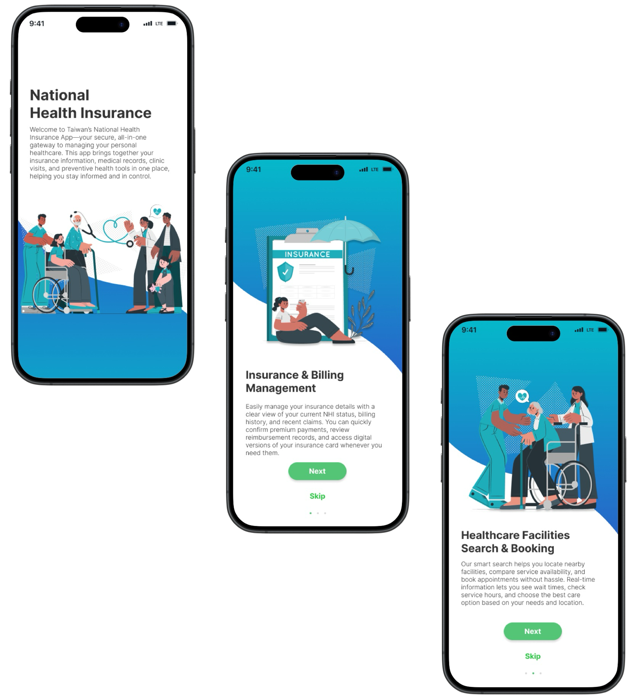
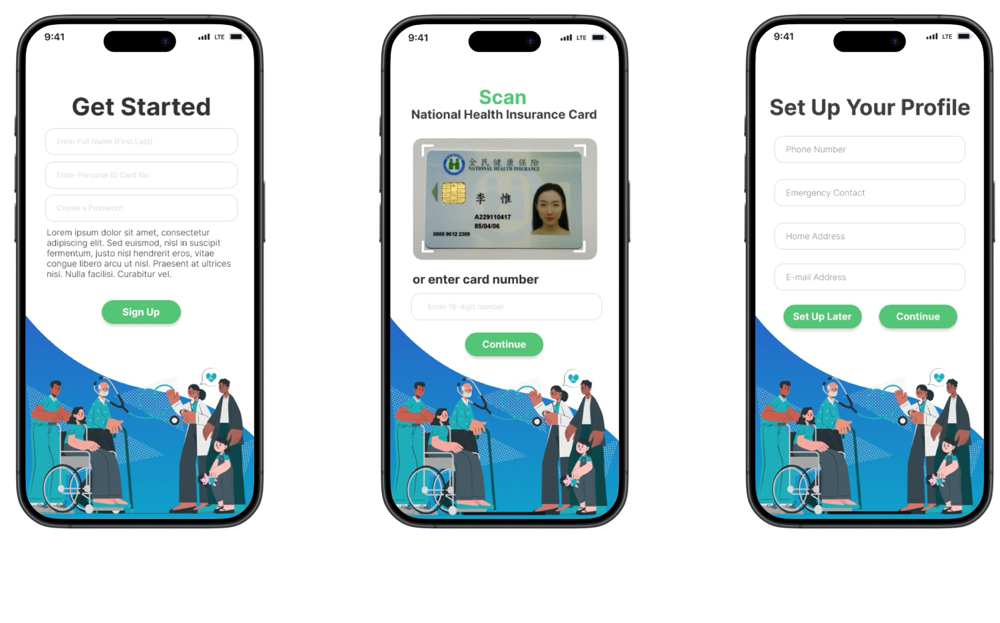
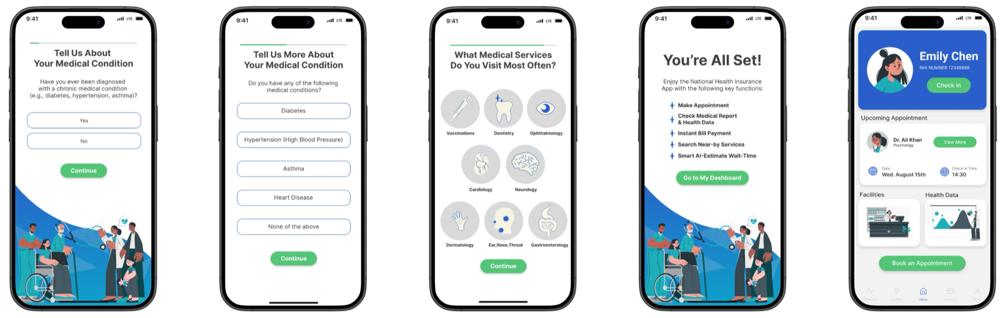
Problem 2
Search Function Is Scattered in Different Levels of Navigation
People struggle to find clinics or hospitals that offer the exact service they need, such as a vaccination. Without clear, reliable facility information, they waste time calling clinics, browsing outdated websites or visiting several locations. In the current app, search is split between two different tabs.
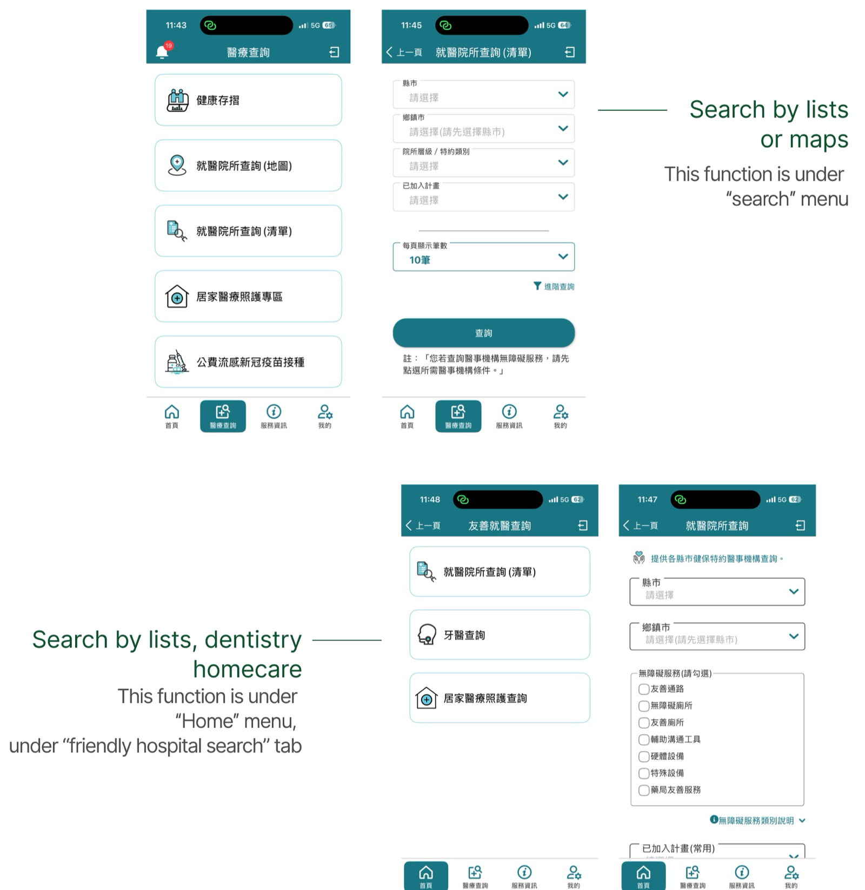
Solution
Keyword Search for Facilities
One smart search lets people filter clinics and hospitals by vaccination, available services, distance, opening hours and real-time wait status. AI suggests service keywords based on the health details entered at sign-up and on current medical trends.
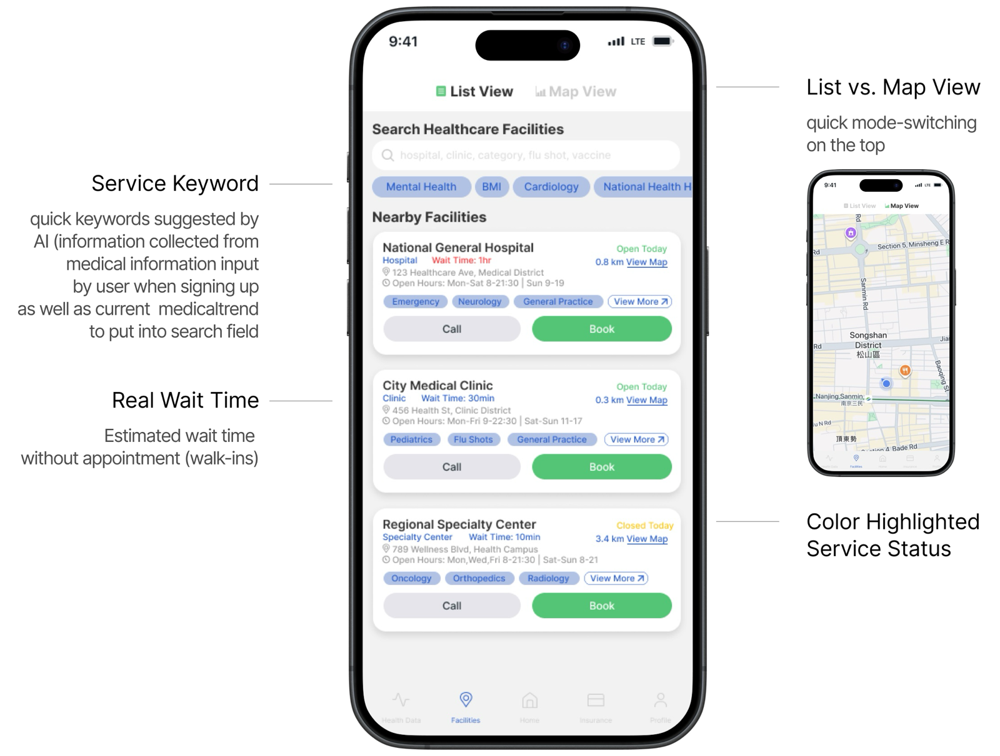
System Problems
The second layer: challenges across Taiwan's healthcare system that the app can help with.
Problem 3
Scattered Medical Reports & Health Data
Patients with chronic conditions such as diabetes receive reports from several clinics and hospitals. With no single place to follow metrics like blood glucose, kidney function or weight, managing their health becomes overwhelming.
Solution
AI-Powered Health Data Overview
The app gathers reports from every clinic and hospital, extracts the key metrics and organizes them into one dashboard. Clear charts and trend analysis help chronic-disease patients understand their long-term progress and spot meaningful patterns.
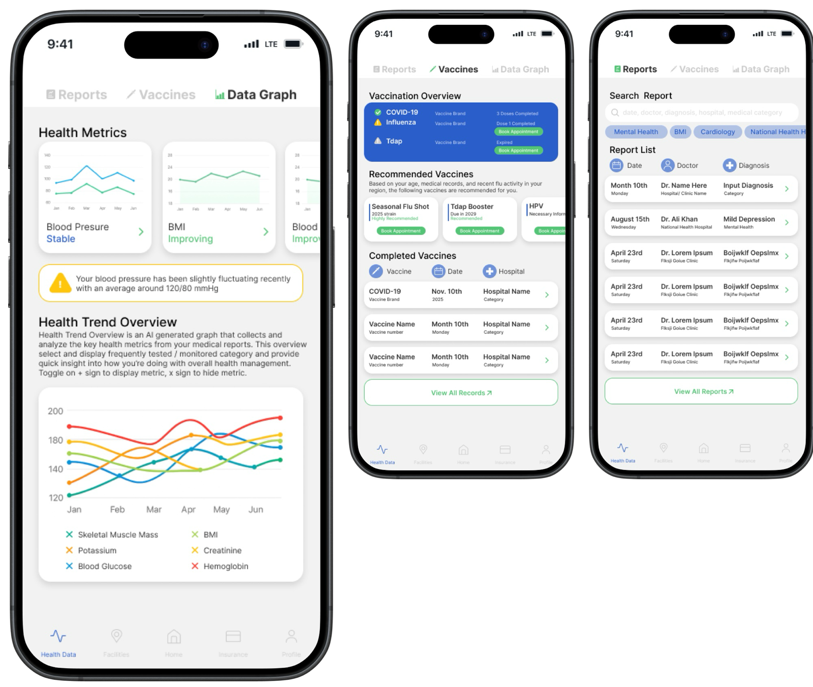
Problem 4
Crowded Hospitals and On-Site Payment
Patients often pay medical fees or insurance charges at counters or kiosks, which means long queues, confusion and unnecessary exposure in crowded hospitals.
Solution
Online Billing
A secure, mobile-friendly payment system lets people review medical fees, insurance charges and outstanding bills in the app, and pay by credit card, mobile wallet or bank transfer. It reduces on-site congestion, shortens waits and limits exposure in hospitals.
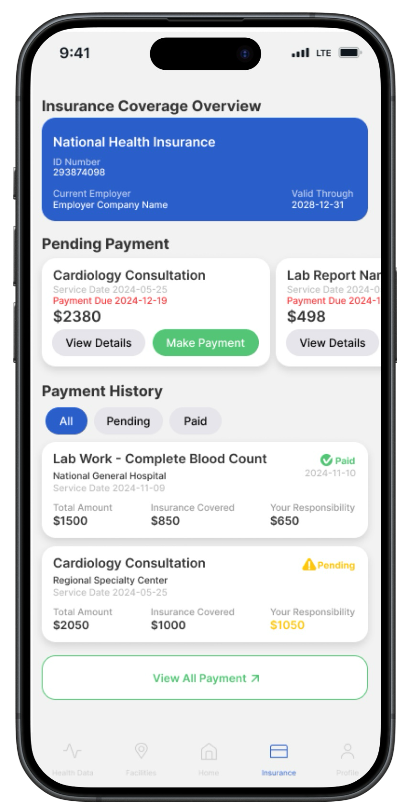
Problem 5
Unpredictable Wait Times
People arrive at clinics without knowing whether they will wait ten minutes or several hours. As Taiwan becomes a super-aged society in 2025, more elderly patients may spend three to four hours in waiting rooms, increasing fatigue and the risk of spreading disease among a vulnerable population.
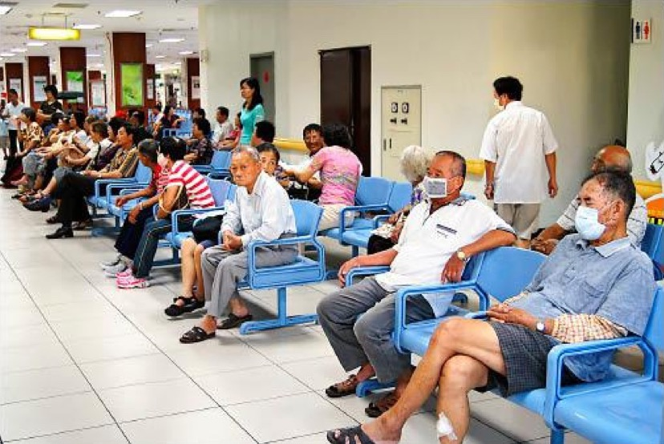
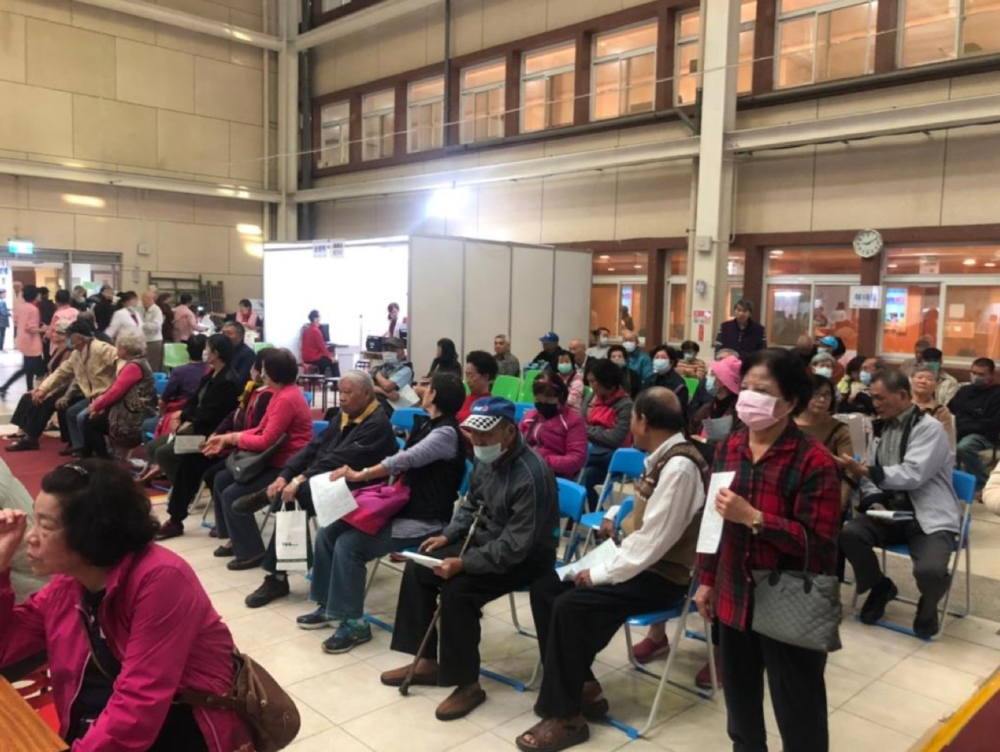
Solution
AI Wait-Time Prediction
An AI wait-time estimate draws on real-time clinic data, historical traffic, service type and demographic trends. People can choose the best time and place to go, with less uncertainty. The screen shows the number currently being seen without revealing any patient's information.
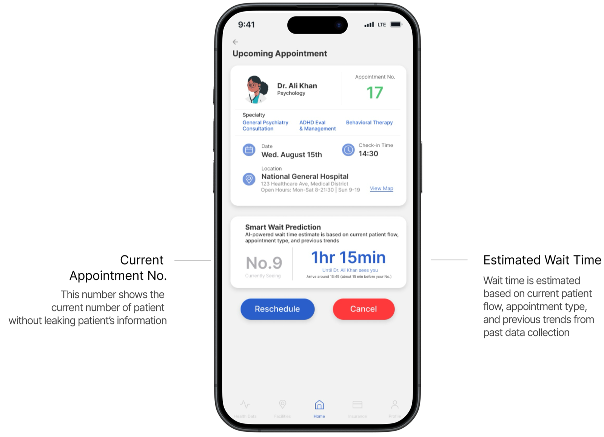
Final Design
The high-fidelity prototype brings the solutions together in four main areas.
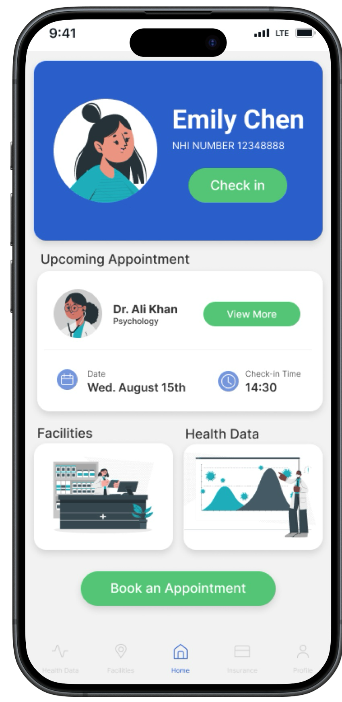
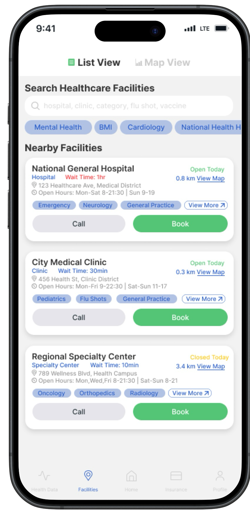
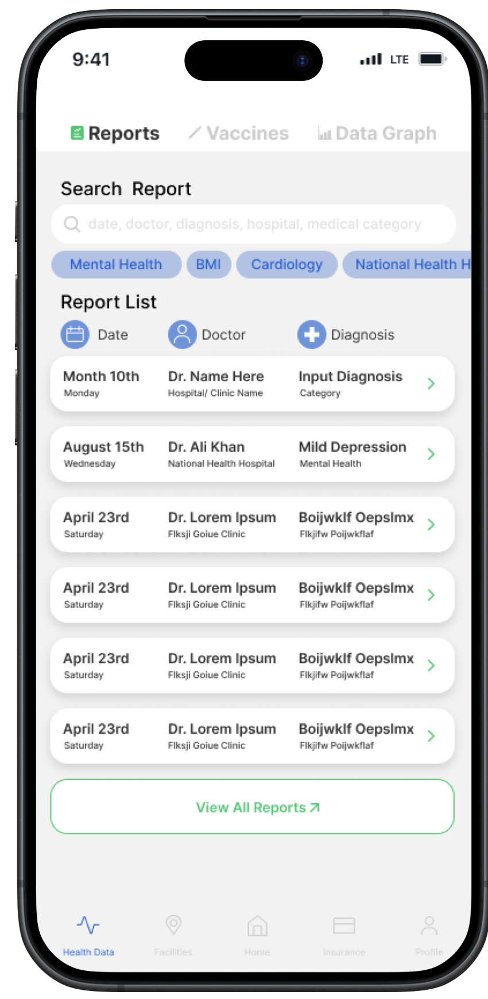
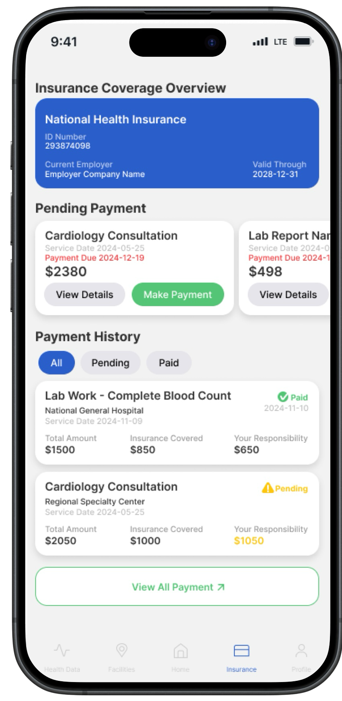
Outcome & Next Steps
The redesign answers each pain point from the survey: one simplified sign-in instead of competing login methods, a single keyword search instead of searches split across menus, and health data, wait times and billing gathered where people expect them. The result is an app that works less like a government form and more like a health companion.
Next, I'd test the prototype with real patients, especially older users like James, comparing how long key tasks take against the current app. Throughout the project, AI sped up my exploration, but every output still needed a designer's judgment: AI should enhance, not replace, the designer's thinking.